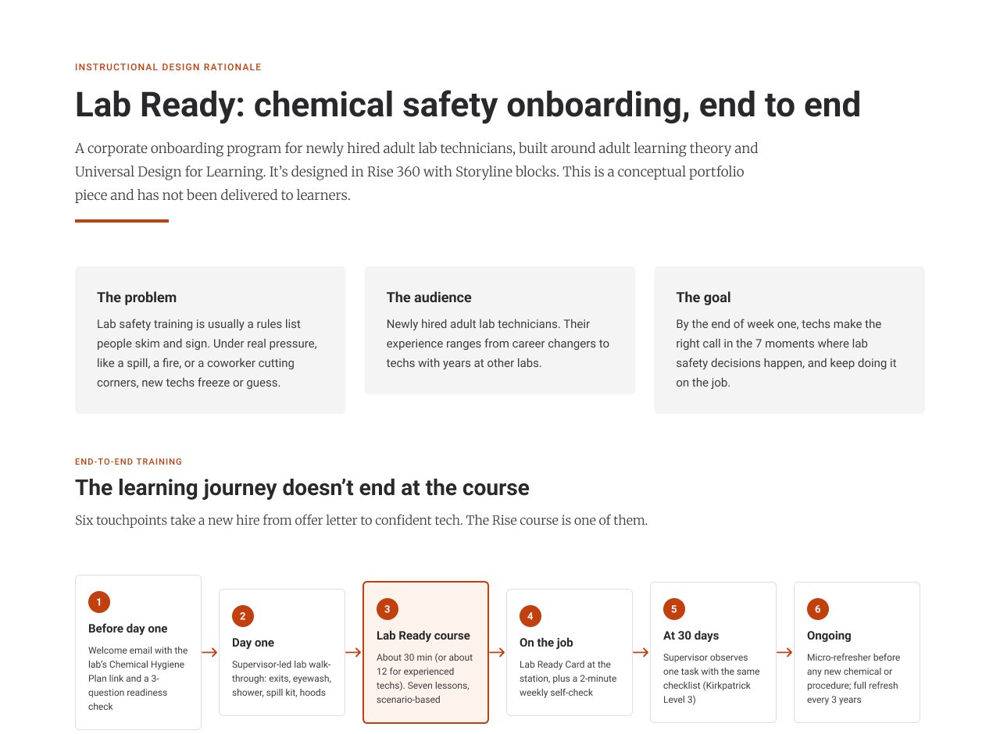
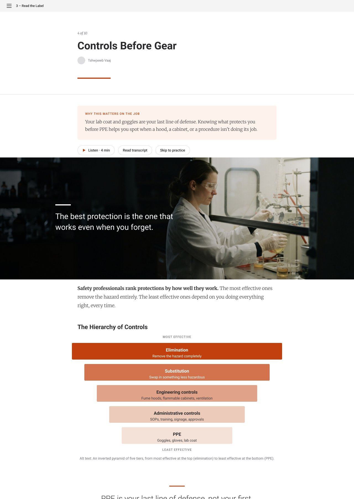
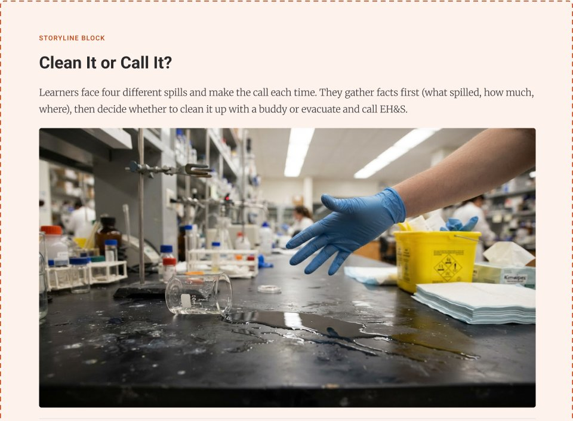
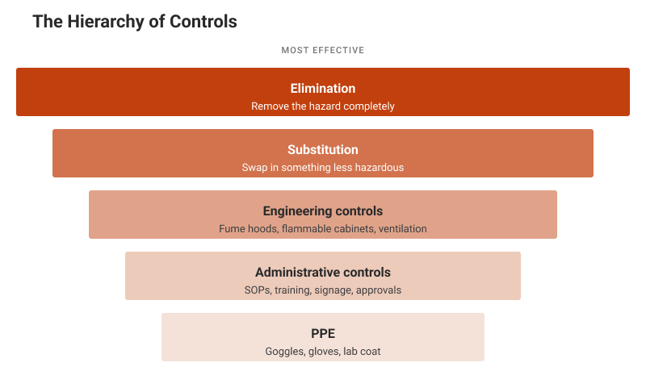
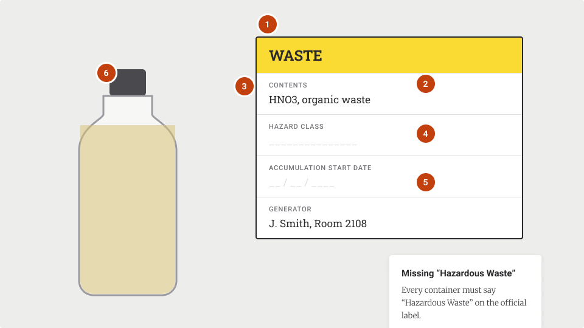
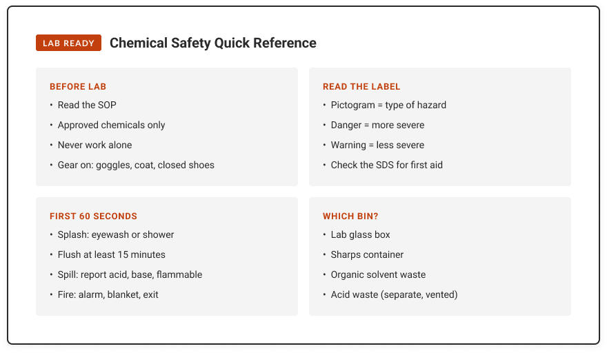
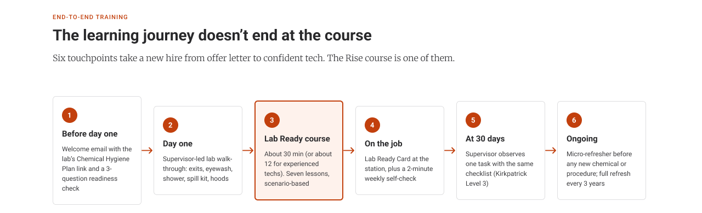

Lab Ready
A chemical safety onboarding course for new lab technicians
Lab Ready is a scenario-based onboarding course that turns a 70-rule chemical safety contract into seven decisions new lab technicians actually face: reading a label, checking a fume hood, knowing when to clean up a spill and when to call for help, and leaving a station safe for the next person. It's designed for adult learners in Articulate Rise 360, with practice in every lesson and a job aid that stays at the bench.
Lab Ready is a portfolio concept and hasn't been delivered to learners. I adapted the source documents without naming the school district or university they came from.
My process
From problem to prototype
Compared the safety contract I handed my own students with Cal/OSHA §5191 and a university Chemical Hygiene Plan, and found where they disagreed.
See it
DesignReorganized about 70 rules into 7 decision moments, wrote objectives, and planned a 6-touchpoint training journey.
See it
DevelopWireframed 10 Rise-style lessons in Figma, then started building a 5-lesson cut in Rise 360.
See it EvaluatePlanned all four Kirkpatrick levels, from a usefulness rating to a 30-day supervisor check.
See itThe Problem
Most lab safety training is a list of rules you read once and sign. I handed out that kind of contract to my own chemistry students: about 70 rules across two pages. People skim, sign and forget, and a list of rules doesn't tell you what to do when a spill is too big, a hood alarm goes off, or a senior coworker cuts a corner.
The Solution
I rebuilt the rules around the moments new technicians actually face. Each lesson opens with why it matters on the job, teaches one decision, and gives practice right away: a fume hood to inspect, spills to clean up or call in, a waste label to fix. Experienced hires can test out, and everyone leaves with a one-page card for their station.
Learning objectives
What learners will be able to do
Given a real task at the bench, a new lab technician will be able to:
- 01
Read a chemical label and Safety Data Sheet to name a chemical's hazards before using it.
Measured by: the label and hazard questions in the final check.
- 02
Check a fume hood and choose the right controls and protective gear for a task.
Measured by: finding the problems in Hood Check, plus the glove question.
- 03
Decide whether to clean up a spill or call for help.
Mastery: the right call in all three Clean It or Call It? scenes.
- 04
Respond to a splash, a fire or an unknown chemical in the first 60 seconds.
Measured by: the fire and old ether bottle scenarios.
- 05
Label and sort hazardous waste, and leave the station safe for the next person.
Measured by: all six errors found on the waste label, plus the container sort.
Each objective maps to one of the seven decision moments and a section of the Lab Ready Card.
My thought process
How the design evolved
Every big decision came from a question I asked along the way. Here's the path, in order.
Find the gap
Every project in my portfolio was a branching scenario. Hiring posts kept asking for Rise and compliance training, so I picked chemical safety, the subject I taught.
Start with what I know
I began with the safety contract I handed my own students and outlined a course around it.
Switch to adults
Most instructional design roles ask for adult learning, so I rewrote the course for newly hired lab technicians.
Read the real standards
Cal/OSHA §5191 and a university Chemical Hygiene Plan raised the bar and exposed errors: 15 vs. 20 minutes for an eye flush, the outdated term MSDS, and a contact lens rule the adult standard doesn't include.
Borrow a proven layout
I studied a Rise course from Articulate's community challenges: photos with short captions, lots of space, one idea per block. Then I wireframed all 10 lessons in Figma.
Design for real adults
I added a test-out path, a “why this matters” card in every lesson, audio and transcripts, and a 6-touchpoint journey. Then I started building a 5-lesson cut in Rise.
Practice in every lesson
I wireframed every lesson in Figma before opening Rise, so each block had a job before I built it. The layout follows a proven Rise pattern: a photo with a short caption, a few sentences, then practice. Each lesson teaches one decision and practices it right away.




The course is one of six touchpoints
Training doesn't end when the course does. I planned a journey from before day one to a refresher every three years: a welcome email with the lab's safety plan, a day-one walk-through, the course, a station card and weekly self-check, a supervisor check at 30 days, and a short refresher before any new chemical or procedure. A design notes board maps every decision to adult learning principles, UDL and Kirkpatrick's four levels.

Accessibility & UDL
Designed so more learners can get in
Built in
- Every hazard pictogram has a text label, so color is never the only cue.
- Audio narration, a transcript and captions are available in every lesson.
- Experienced hires can test out with a short self-check; everyone else follows a guided path.
- No time limit on the final check, and a timer that can be turned off in timed practice.
- Alt text on every graphic, and a click-to-place option for drag activities.
Next accessibility pass
- Check every color pair in the Rise theme against WCAG 2.2 AA contrast.
- Test the full course with a keyboard and a screen reader.
- Rebuild Hood Check and Clean It or Call It? in Storyline with a logical keyboard focus order.
- Publish the Lab Ready Card as an accessible PDF.
Evaluation plan
Here's how I'd measure Lab Ready with a real group of new hires, using Kirkpatrick's four levels.
New techs find it useful for the job.
A 1–5 usefulness rating at the end of the course.
Built into the courseTechs make the right call in each scenario.
A scenario-based final check, 80% to pass, with links back to each lesson.
Built into the courseTechs use the habits at the bench.
A supervisor observes one task at 30 days, using the weekly self-check.
PlannedA safer lab.
More near misses reported, and fewer inspection findings and incidents.
PlannedLessons Learned
The biggest lesson was that the source material had problems of its own. The student contract and the adult standards disagreed on simple facts, like how long to flush an eye. Reading the actual regulation, not a summary of it, changed the course.
I'm also learning Rise by building in it. Designing in Figma first meant every block had a job before I opened the editor. Where Rise's built-in blocks couldn't do what I planned for Storyline, I swapped in a labeled graphic and a scenario block, and I noted the Storyline upgrade as the next step.